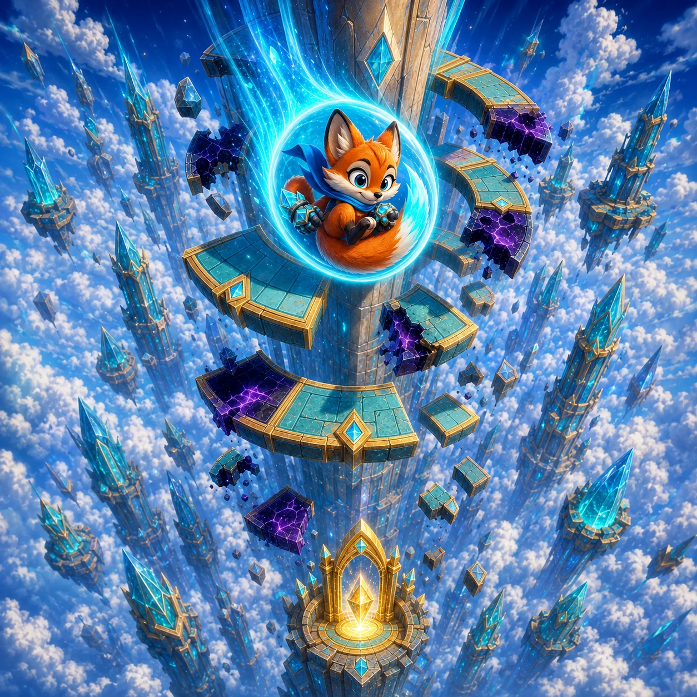

Rotate the tower and reach the rescue gate.
0 / 30Turn the tower. Read the landing. Keep the fall alive.
Fia is sealed inside a protective comet sphere while descending thirty unstable skyspires. Drag left or right to rotate every ring. Pass through openings, bounce on safe turquoise stone, and avoid violet cursed sectors.
How to play
- Drag across the tower or use Left and Right to rotate the rings.
- Place an opening beneath Fia before her next landing.
- Fall through consecutive rings to charge Comet Break and smash one danger.
Thirty different descents
Six chapters introduce fragile glass, drifting rings, reversed controls, charge crystals, shield gates, and Crownfall towers that combine every rule.
Reading the spiral
A short safe bounce creates time to rotate. Long falls build power, but the next platform arrives faster. Decide when to aim for a gap and when to land deliberately.
Save and privacy
Stars, best times, shards, and upgrades stay in this browser. No login or personal information is required.
FAQ
- How many skyspires are there?
- There are 30 authored skyspires across six chapters.
- What charges Comet Break?
- Passing through consecutive openings builds the charge. A full charge can break through one danger.
- Does progress save?
- Yes. Cleared towers, stars, best times, sky shards, and Comet Forge upgrades save locally.
- Which controls and screen sizes are supported?
- The same rules support touch, mouse, and keyboard where the game uses those inputs. The interface scales as one logical layout across the required phone, landscape, and desktop viewports.
- Can progress move automatically to another device?
- No. This game currently saves to local browser storage only, so another browser profile or device begins with its own separate local progress unless a future account system is added.

Drag the rail and choose an unlocked tower.
Comet Forge
Spend saved sky shards on permanent control and survival upgrades.
A violet-gold trail cosmetic. It does not change tower balance.
Rotate the tower and reach the rescue gate.
Guide Fia through the opening
- Drag horizontally to rotate the complete tower.
- Turquoise is safe. Violet ends the run unless a shield or Comet Break is ready.
- Three consecutive gaps charge one automatic Comet Break.
Keep this descent?
Continue returns to the exact bounce. Returning to the map ends this run.